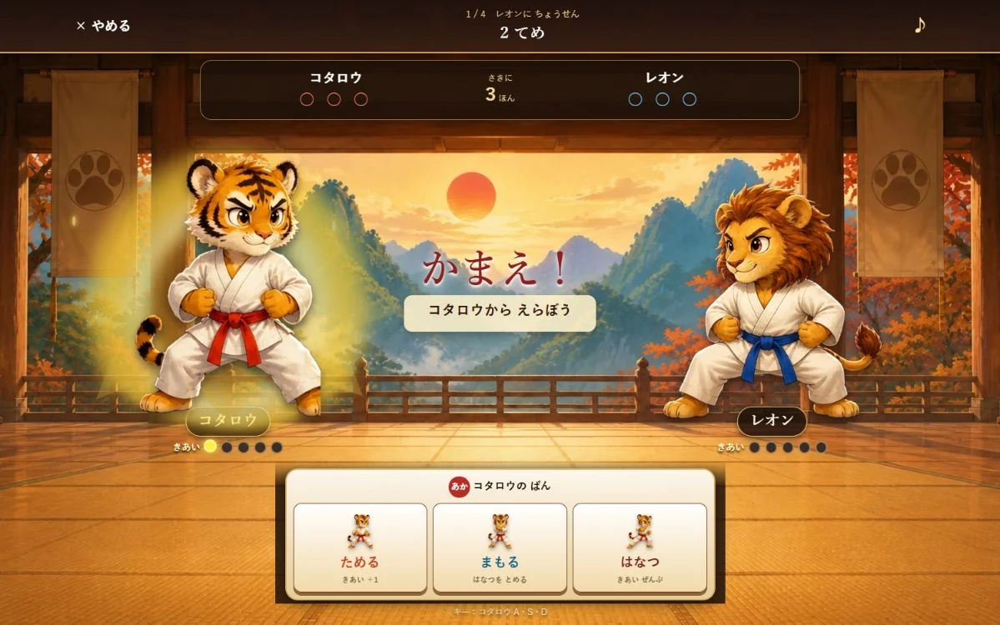

このゲームについて
ためる・まもる・はなつの関係と気合いの量を使い、相手が次に選ぶ手を予想します。二人対戦では、同じ画面を囲んで互いの考えを読み合います。一人でCPUへ挑戦することもできます。
遊び方
二人対戦または一人対戦を選び、毎手ごとに三つの技から一つを決めます。ためると気合いが増え、はなつには気合いが必要です。技の関係を考えながら、先に三本を取ると勝ちです。
ゲーム中に行うこと
- 三つの技から一手を選ぶ
- 相手の気合いや選び方を見て次の手を考える
ここではゲーム中の活動を説明しています。能力の向上や、特定の効果・改善を保証するものではありません。